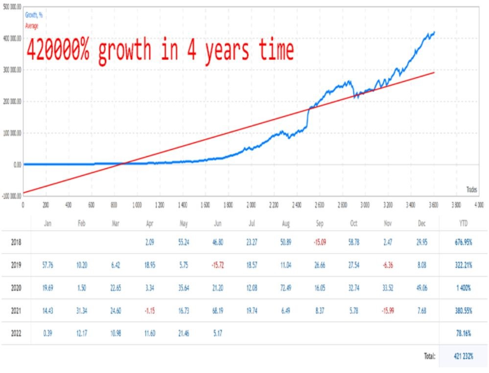

Evaluating a Forex Expert Advisor (EA) goes beyond simply looking at profit and loss statements. The true measure of an EA’s success lies in its key performance indicators (KPIs)—quantifiable metrics that determine its efficiency and reliability. A trader who understands these metrics can make informed decisions and avoid systems that are prone to failure. Shopforexea offers advanced EAs designed with these crucial performance metrics in mind.
The profit factor is one of the most critical KPIs when assessing a Forex EA. It is calculated as:
Profit Factor = Total Profit / Total Loss
A profit factor greater than 1.0 indicates that the EA is profitable. However, an excessively high profit factor (above 3.0) might suggest overfitting or insufficient trading data. A stable EA typically maintains a profit factor between 1.5 and 2.5 over a long trading period.
Understanding the profit factor helps traders gauge the risk-reward efficiency of an EA. While a high-profit factor is desirable, it should always be evaluated alongside other metrics such as drawdown and consistency.
Drawdown measures the maximum decline in an EA’s account balance from its peak before recovering. It is expressed as a percentage and is crucial for risk management.
Types of drawdown:
Absolute Drawdown: The difference between the initial deposit and the lowest point of the account.
Relative Drawdown: The percentage decline from the highest balance to the lowest point.
Maximum Drawdown: The worst-case scenario in which the EA experienced the largest drop before recovery.
A healthy EA maintains a maximum drawdown of less than 20-30%. Anything above 50% is considered high risk and could lead to account wipeout under extreme market conditions.
The win rate represents the percentage of trades that resulted in a profit. A high win rate is often desirable, but it must be balanced with the risk-reward ratio (RRR). These two metrics work together to determine an EA’s sustainability.
A system with a high win rate (above 70%) but a poor risk-reward ratio (1:1 or worse) may struggle in the long run. On the other hand, a system with a win rate of 40-50% but a strong risk-reward ratio (1:2 or higher) can be more profitable.
Successful Forex EAs are typically optimized for a win rate between 50% and 70%, combined with an RRR of at least 1:1.5 to maintain long-term profitability.
Expectancy is a statistical measure that predicts how much an EA is likely to win or lose per trade on average. It is calculated using the formula:
Expectancy = (Win Rate × Average Win) – (Loss Rate × Average Loss)
A positive expectancy means the EA is profitable over the long run, while a negative expectancy suggests inevitable losses. Expectancy is one of the most powerful indicators because it considers both the probability of success and the size of wins and losses.
The Sharpe ratio evaluates an EA’s returns relative to its risk exposure. A higher Sharpe ratio indicates that the EA generates more stable returns with lower volatility.
A good Forex EA maintains a Sharpe ratio above 1.0, with 1.5 to 2.0 being an optimal range for balanced risk-adjusted returns.
Consistency is an often-overlooked yet critical factor when evaluating an EA. A profitable EA should not only show strong performance in backtesting but also maintain stable results in live trading over time.
Key aspects of consistency include:
Consistency ensures that the EA is not simply optimized for past data but is capable of sustaining profitability in real-world conditions.
The amount of time an EA holds trades also impacts its performance. Some EAs are designed for scalping, which involves executing multiple small trades throughout the day, while others focus on longer-term trend following.
Scalping EAs typically have a high win rate but low risk-reward ratio, making them sensitive to slippage and broker execution speed. Trend-following EAs, on the other hand, tend to have lower win rates but higher profit potential per trade.
Traders should choose an EA based on their preferred trading style and risk tolerance.
Understanding the key performance indicators of a Forex EA is essential for making informed trading decisions. Profit factor, drawdown, win rate, expectancy, and Sharpe ratio provide valuable insights into an EA’s risk and profitability.
For traders seeking high-quality EAs built with these performance standards, visit Shopforexea to explore expert-vetted automated trading solutions.
Learn more: Navigating Market Dynamics: How Advanced Forex EAs Adapt to Changing Conditions
(208) 555-0112
support@shopforexea.com
71-75 Shelton Street, London, WC2H 9JQ UNITED KINGDOM